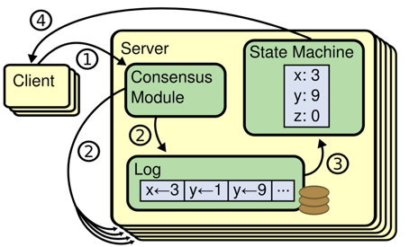
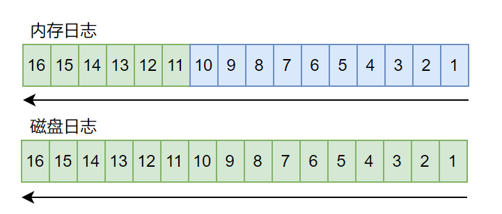

复制状态机（Replicated state machine）

- 在复制状态机模型中，一致性模块将包含客户端的请求的日志序列同步到其他副本
- 常见的日志模块实现，包含以下几种：
- 持久化到磁盘，同步时从磁盘加载。磁盘加载慢，性能低。
- 持久化到磁盘，同时缓存到内存，同步时直接从内存读取。性能高，但内存占用太大。
- 在raft中，保留的日志的数量影响是否同步状态机的数据。日志保留太少，需要频繁同步状态机数据。日志保留太多，占用太多磁盘（1、2）和内存（2）。
- 大多数raft实现都采用方式2，使用内存来加速复制。在single-raft应用中，该方式不会存在太大问题。但在multi-raft应用中，如何控制内存的使用，是一个不小的挑战。
log design
以下介绍一种raft日志模块的设计，在日志数量、内存以及性能中均衡。

- 蓝色日志只包含日志元数据index、term
- 绿色日志包含日志元数据index、term以及日志操作数据
- 内存只有最近的日志保留操作数据，用于快速同步。当需要的日志在内中没有操作数据时，直接从磁盘加载。
- 内存中只有少量日志包含了操作数据，大大降低内存的占用。